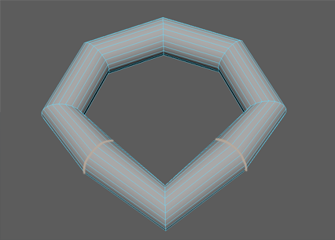
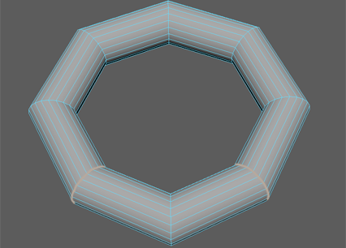

您可以使用“编辑网格 > 编辑边流”(Edit Mesh > Edit Edge Flow)选项在多边形网格上编辑边流。“编辑边流”(Edit Edge Flow)可调整边的位置以适合周围网格的曲率。
编辑边流
- 选择网格中的边。
注： 为获得最佳结果，建议您选择不超过 2 个非相邻循环边；否则，结果可能是无法预测的。
- 选择“编辑网格 > 编辑边流”(Edit Mesh > Edit Edge Flow) >
 。
。
“编辑边流选项”(Edit Edge Flow Options)窗口将出现。
默认情况下，“调整边流”(Adjust Edge Flow)处于启用状态并设置为 1 以最大限度地调整边角度。设置为 0 时，选定的边将移动到附近其他边的中间，从而形成平滑过渡。
- 单击“编辑”(Edit)。

边的位置会移动到与网格的曲率连续性保持一致。
提示： 若要调整边流编辑操作的结果，请使用 polyEditEdgeFlow 节点中的“调整边流”(Adjust Edge Flow)属性。 - 在显示的视图中编辑器中，调整 polyEditEdgeFlow 节点属性。
提示： 也可以通过使用“边变换约束”(Edge Transform Constraint)拉直循环边来改进边流。